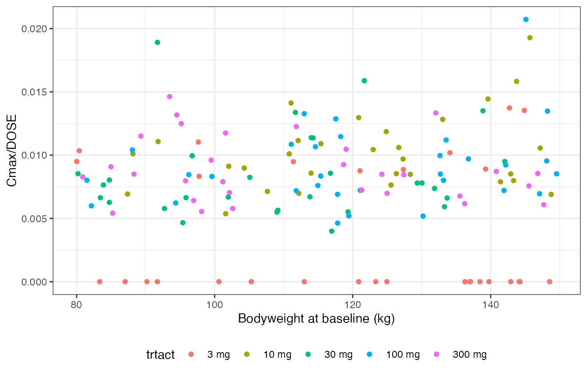

DataCreate.RmdBuilt 2021-06-25 using NMdata 0.0.7.9.901.
Getting data ready for modeling is a crucial and tedious but often underestimated task. Mistakes during the process of combining data sets, defining time variables etc. can lead to difficulties during modeling, need for revisiting data set creation, and in the worst case where the errors are not quickly realized, a lot of wasted time working with an erroneos data set. Avoiding those mistakes by integrating checks into the data creation process is a must.
Furthermore, Nonmem has quite a number of restrictions on the format of the input data, and problems with the data set is a very common reason for Nonmem not to behave as expected. When this happens, debugging can be time-consuming. NMdata includes some simple functions to prevent these situations.
This vignette uses data.table syntax for the little bit of data manipulation performed. However, you don’t need to use data.table at all to use these tools or any tool in NMdata. The reason why the functions return data.table objects is that the data set is a data.table to begin with
pk <- readRDS(file=system.file("examples/data/xgxr2.rds",package="NMdata"))
class(pk)
#> [1] "data.table" "data.frame"If this was a data.frame (and not a data.table), the NMdata functions would keep returning objects of class data.frame.
When stacking (rbind) and merging, it is most often necessary to check if two or more data sets are compatible for the operation. compareCols by defaults lists the columns where the two data sets differ.
Just to illustrate the output of compareCols, a slightly modified version of the pk dataset has been created. On column (CYCLE) has been removed, and AMT has been recoded to character. compareCols tells us about exactly these two differences. So before mergeing or stacking, we may want to recode AMT in one of the datasets to get the class we need, and decide what to do about the missing CYCLE in one of the datasets (if OK, we fill in NA.
compareCols(pk,pk.reduced)The model estimation step is heavily dependent (and in Nonmem almost entirely based) on numeric data values. The source data will often contain character variables, i.e. columns with non-numeric data values.
If the column names reflect whether the values are numeric, double-checking can be avoided. renameByContents renames columns if a function of their contents returns TRUE.
pk.renamed <- renameByContents(data=pktmp,fun.test=NMisNumeric,fun.rename = tolower, invert.test = TRUE)NMisNumeric is a function that tests if the contents are numeric to Nonmem. If say the subject ID is of character class, it can be valid to Nonmem. Subject ID "1039" will be a numeric in Nonmem, "1-039" will not. We invert that, and those that Nonmem cannot interpret as numeric become lowercase. We use compareCols to illustrate that three columns were renamed:
compareCols(pktmp,pk.renamed)Merges are a very common source of data creation bugs. As simple as they may seem, merges likely leave you with an unexpected number of rows, some repeated or some omitted. mergeCheck provides a merge which is restricted to the specific kind where the rows that come out of the merge are the exact same as in one of the existing datasets, only columns added from the second dataset. This limitation of the scope of the merge allows for a high degree of automated checks of consistency of the results.
Say we want to add a covariate from a dt.cov. Imagine we just assume that all subjects are represented with one row each in dt.cov, and so we expect the number of rows to be unchanged from pk. But we see that only when remembering all.x=T, we get the dimensions we had expected (we do not checked that we get the right rows, only that we get the right number of rows):
dim(pk)
#> [1] 1502 24
## the number of unique values of ID in pk
pk[,uniqueN(ID)]
#> [1] 150
pk[,range(ID)]
#> [1] 31 180
## dt.cov has a covariate for some of the subjects
dt.cov
#> ID COV
#> 1: 31 4
#> 2: 32 3
#> 3: 33 1
#> 4: 34 2
#> 5: 35 4
#> 6: 36 5
#> 7: 37 1
#> 8: 38 3
#> 9: 39 1
#> 10: 40 4
pk2 <- merge(pk,dt.cov,by="ID")
dim(pk2)
#> [1] 100 25
## now as expected
pk3 <- merge(pk,dt.cov,by="ID",all.x=TRUE)
dim(pk3)
#> [1] 1502 25So when creating pk2 we lost a lot of rows because we forgot the all.x option. And also as we shall now see that checking the resulting dimensions is not enough. In the following example, pk4 has the same number of rows as pk, but one row is repeated, another must have disappeared.
pk4 <- merge(pk,dt.cov2,by="ID")
dim(pk4)
#> [1] 1502 25
## we now have twice as many rows for this subject
pk[ID==31,.N]
#> [1] 10
pk4[ID==31,.N]
#> [1] 20As illustrated by these simple examples, even the simplest merges have to be rigorously checked, no exceptions. The function call mergeCheck(x1,x2) ensures that the result has exactly one of each rows from x1 and nothing else. We can use ... to pass additional arguments to merge. Here, we need all.x to include rows from x1 where ID is not matched by a row in dt.cov.
pk2 <- try(mergeCheck(pk,dt.cov,by="ID"))
#> Rows disappeared during merge.
#> Overview of dimensions of input and output data:
#> data nrows ncols
#> 1: pk 1502 25
#> 2: dt.cov 10 2
#> 3: merged.df 100 26
#> Overview of values of by where number of rows in df1 changes:
#> ID N.df1 N.result
#> 1: 41 10 0
#> 2: 42 10 0
#> 3: 43 10 0
#> 4: 44 10 0
#> 5: 45 10 0
#> ---
#> 136: 176 10 0
#> 137: 177 10 0
#> 138: 178 10 0
#> 139: 179 10 0
#> 140: 180 10 0
#> Error in mergeCheck(pk, dt.cov, by = "ID") :
#> Merge added and/or removed rows.
## now as expected
pk3 <- mergeCheck(pk,dt.cov,by="ID",all.x=TRUE)
dim(pk3)
#> [1] 1502 25The result always has the same row order as the x1 argument.
Another problem that the programmer may not realize during a merge is that column names are shared across x1 and x2 (in addition to columns that are being merged by). This will silently create colmn names like col.x and col.y in the output. mergeCheck will by default give a warning if that happens. There is an optional argument to tell mergeCheck how many columns should be added by the merge, and mergeCheck will fail if another number of columns are added. This can be useful for programming.
There is only one difference from the behaviour of the merge.data.frame function syntax, being that the by argument must always be supplied to mergeCheck.
You may think that this will limit your merges, and that you need merges for inner and outer joins etc. You are exactly right - mergeCheck is not intended for those merges and does not support them. When that is said, the kind of merges that are supported by mergeCheck are indeed very common. To illustrate how common, all merges in the NMdata package are performed with mergeCheck.
It is good practice not to discard records from a dataset but to flag them and omit them in model estimation. When reporting the analysis, we also need to account for how many data records were discarded due to which criteria. A couple of functons in NMdata help you do this in a way that is easy to integrate with Nonmem.
The implementation in NMdata is based on sequentially checking exclusion conditions. This means we can summarize how many records and subjects were excluded from the analysis due to the different criteria. The information is represented in one numerical column for Nonmem, and one (value-to-value corresponding) character column for the rest of us in the resulting data.
For use in Nonmem, the easiest is that inclusion/exclusion is determined by a single column in data - we call that column FLAG here, but any column name can be used. FLAG obviously draws on information from other columns such as TIME, DV, and many others, depending on your dataset and your way of working.
The function that applies inclusion/excluasion rules is called flagsAssign, and it takes a dataset and a data.frame with rules as arguments.
dt.flags <- fread(text="FLAG,flag,condition
10,Below LLOQ,EVID==0&BLQ==1
100,Negative time,EVID==0&TIME<0")
pk <- flagsAssign(pk,tab.flags=dt.flags,subset.data="EVID==0")
#> Coding FLAG = 100, flag = Negative time
#> Coding FLAG = 10, flag = Below LLOQ
pk[EVID==1,FLAG:=0]
pk[EVID==1,flag:="Dosing"]Your first question may be why fread is used to create a data.table (like read.csv to create a data.frame). The reason is that this way, we can write the information line by line. If you have ten lines in the dataset above and do data.frame(FLAG=...,flag=...,condition=...) it gets impossible to read what elements of the three columns that correspond.
flagsAssign applies the conditions sequentially and by increasing value of FLAG. FLAG=0 means that the observation is included in the analysis. You can use any expression that can be evaluated within the data.frame. In this case, BLQ has to exist in pk.
In Nonmem, you can include IGNORE=(FLAG.NE.0) in $DATA or $INFILE.
Again, the omission will be attributed to the first condition matched. Default is to apply the conditions by the order of decreasing numerical flag value. There is an argument if you prefer the opposite. However, what cannot be modified is that 0 is the numerical value for rows that are not matched by any conditions.
What rows to omit from a dataset can vary from one analysis to another. Hence, the aim with the chosen design is that the inclusion criteria can be changed and applied to overwrite an existing inclusion/exclusion selection. For another analysis we want to include the observations below LLOQ. We have two options. Either we simply change the IGNORE statement given above to IGNORE=(FLAG.LT.10), or you create a different exclusion flag for that one. If you prefer to create a new set of exclusion flags, just use new names for the numerical and the character flag columns so you don’t overwrite the old ones. See help of flagsAssign and flagsCount for how.
An overview of the number of observations disregarded due to the different conditions is then obtained using flagsCount:
tab.count <- flagsCount(data=pk[EVID==0],tab.flags=dt.flags)
print(tab.count)
#> flag N.left Nobs.left N.discard N.disc.cum Nobs.discard
#> 1: All available data 150 1352 NA 0 NA
#> 2: Negative time 150 1350 0 0 2
#> 3: Below LLOQ 131 755 19 19 595
#> 4: Analysis set 131 755 NA 19 NA
#> Nobs.disc.cum
#> 1: 0
#> 2: 2
#> 3: 597
#> 4: 597flagsCount includes a file argument to save the the table right away.
Once you have your dataset in place, NMdata provides a few useful functions. At this point, ideally you check your data for any inconsistency. If you miss an inconsistency, you need to wait for Nonmem to finish if the inconsistency is not fatal for Nonmem’s ability to run the model. Then, you may or may not realize the inconcisteny quickly. NMdata is still ways from providing a sufficient set of tests to run, but already includes some checks that are useful and easy to run.
The order of columns in Nonmem is important for two reasons. One is that a character in a variable read into Nonmem will make the run fail. The other is that there are restrictions on the number of variables you can read into Nonmem, depending on the version. NMorderColumns tries to put the used columns first, and other or maybe even unusable columns in the back of the dataset. It does so by a mix of recognition of column names and analysis of the column contents.
Columns that cannot be converted to numeric are put in the back, while column bearing standard Nonmem variable names like ID, TIME, EVID etc. will be pulled up front. You can of course add column names to prioritize to front (first) or back (last). See ?NMorderColumns for more options.
pk <- NMorderColumns(pk)
#> These standard nonmem columns were not found in data: MDVWe may want to add MDV and rerun NMorderColumns.
For the final step of writing the dataset, NMwriteData is provided. Most importantly, it writes a csv file with appropriate options for Nonmem to read it as well as possible. It can also write an rds for R with equal contents (or RData if you prefer), but with the rds including all information (such as factor levels) which cannot be saved in csv. If you should use NMscanData to read Nonmem results, this information can be used automatically. It also provides a proposal for text to include in the $INPUT and $DATA sections of the Nonmem control streams.
NMwriteData(pk)
#> Data _not_ witten to any files.
#> For NonMem:
#> $INPUT ROW ID NOMTIME TIME EVID CMT AMT DV FLAG STUDY BLQ CYCLE DOSE
#> PART PROFDAY PROFTIME WEIGHTB eff0
#> $DATA
#> IGN=@
#> IGNORE=(FLAG.NE.0)Notice, NMwriteData detected the exclusion flag and suggests to include it in $DATA.
If a file name had been provided, the data would have been written, and the path to the data file would have been included in the message written back to the user. There are several arguments that will affect the proposed text for the Nonmem run, see ?NMwriteData.
I may be the only one, but sometimes during the modeling stage, I want to go back and change or add something to the data creation step. Then once I have written a new data file, my Nonmem $INPUT sections no longer match the data file. In NMwriteData you can use a last argument to get columns pushed towards the back so the Nonmem runs should still work, but maybe you need the column in your nonmem runs, and so you have no way around updating the control streams. And that can be quite a lot of control streams.
NMdata has a couple of functions to extract and write sections to Nonmem control streams called NMreadSection and NMwriteSection. We are not going into detail with what these functions can do, but let’s stick to the example above. We can do
NMwriteSection("run001.mod","INPUT","$INPUT ROW ID TIME EVID CMT AMT DV FLAG STUDY BLQ CYCLE DOSE FLAG2 NOMTIME PART PROFDAY PROFTIME WEIGHTB eff0")But in fact, we can go a step further and take the information straight from NMwriteData
text.nm <- NMwriteData(pk)
#> Data _not_ witten to any files.
#> For NonMem:
#> $INPUT ROW ID NOMTIME TIME EVID CMT AMT DV FLAG STUDY BLQ CYCLE DOSE
#> PART PROFDAY PROFTIME WEIGHTB eff0
#> $DATA
#> IGN=@
#> IGNORE=(FLAG.NE.0)NMwriteData invisibly returns a list of sections ($INPUT and $DATA). NMwriteSection can use these directly. So to write only the $INPUT section to run001.mod, we do the following. Please notice the single brackets in text.nm["INPUT"] which mean that we still send a list to NMwriteSection.
NMwriteSection("run001.mod",list.sections=text.nm["INPUT"])If you run this in a loop over the control streams that use the created data set, you are all set to rerun the models as needed.
The last couple of functions that will be introduced here are used for tracing datasets to data creation scripts, including time stamps and other information you want to include with the data set.
pk <- stampObj(pk,script="vignettes/DataCreate.Rmd")
#> Warning: 'stampObj' is deprecated.
#> Use 'NMstamp' instead.
#> See help("Deprecated")
objInfo(pk)
#> Warning: 'objInfo' is deprecated.
#> Use 'NMinfo' instead.
#> See help("Deprecated")
#> $DataCreateScript
#> [1] "vignettes/DataCreate.Rmd"
#>
#> $CreationTime
#> [1] "2021-06-25 03:03:18 UTC"The script argument is recognized by stampObj, but you can add anything to this. Say you want to keep descriptive note too:
pk <- stampObj(pk,script="vignettes/DataCreate.Rmd",Description="A PK dataset used for examples.")
#> Warning: 'stampObj' is deprecated.
#> Use 'NMstamp' instead.
#> See help("Deprecated")
objInfo(pk)
#> Warning: 'objInfo' is deprecated.
#> Use 'NMinfo' instead.
#> See help("Deprecated")
#> $DataCreateScript
#> [1] "vignettes/DataCreate.Rmd"
#>
#> $CreationTime
#> [1] "2021-06-25 03:03:18 UTC"
#>
#> $Description
#> [1] "A PK dataset used for examples."These are very simple functions. But they are simple to use as well, and hopefully they will help you avoid sitting with a data set trying to guess which script generated it so you can do a modification or understand how something was done.
When using NMwriteData, you don’t have to call stampObj explicitly. Just pass the script argument to NMwriteData and stampObj will be applied automatically.
In a proper PK/PD analysis we need to explore the data at multiple variability levels. What we looked at above is at dosing and sampling level (one row per dosing or sampling event). NMdata provides very useful functions to extract information at other levels of variability. Before extracting the subject-level information we will add an individual exposure measure to the dataset. We will use the empirical Bayes’ estimate of the individual maximum concentration. This is derived as the maximum prediction across the sample times - it may be better to simulate the model at a richer time scale to get better precision. Again, we make use of data.table but feel free to use what you prefer. findCovs - like other NMdata functions - will work on data.frame’s, tibble’s and other data.frame-like classes (classes that inherit from data.frame).
res1 <- NMscanData(system.file("examples/nonmem/xgxr001.lst", package="NMdata"),
col.row="ROW",merge.by.row=TRUE,quiet=TRUE,as.fun="data.table")
res1$trtact <- reorder(res1$trtact,res1$DOSE)
## with data.table, create a new column representing ID-level Cmax
res1[,Cmax:=max(IPRED),by=.(ID)]
## findCovs picks the columns that do not vary within cols.id. One row
## per value of cols.id.
res1.id <- findCovs(res1,cols.id="ID")
dim(res1.id)
#> [1] 150 26
ggplot(res1.id,aes(WEIGHTB,Cmax/DOSE,colour=trtact))+
geom_point()+
labs(x="Bodyweight at baseline (kg)")
cols.id can be longer than one. Include a study column, a treatment column to support cross-over, or a model column if you are comparing model fits (see below how to do this very easily).
If your model includes occasion variability, you probably also want to look at
## we have no occasion variability in this data
## res1.id.occ <- findCovs(res1,cols.id=c("ID","OCC"))The simplest use of findCovs is to get variables that are constant across the whole dataset:
findCovs(res1)
#> FLAG STUDY TVKA TVV2 TVCL TVV3 TVQ V3 Q BLQ CYCLE
#> 1: 0 1 0.1812 0.042 0.72457 0.17848 2307400 0.17848 2307400 0 1
#> PART PROFDAY TIMEUNIT model nmout
#> 1: 1 1 Hours xgxr001 TRUELet’s take a look at what is in the res1.id generated above. It is a mix of variables that vary at subject level and variables that are constant across the full dataset.
dim(res1.id)
#> [1] 150 26
head(res1.id,2)
#> ID FLAG STUDY TVKA TVV2 TVCL TVV3 TVQ KA V2 CL
#> 1: 31 0 1 0.1812 0.042 0.72457 0.17848 2307400 0.1812 0.042 0.72457
#> 2: 32 0 1 0.1812 0.042 0.72457 0.17848 2307400 0.1812 0.042 0.72457
#> V3 Q BLQ CYCLE DOSE PART PROFDAY WEIGHTB eff0 TIMEUNIT TRTACT
#> 1: 0.17848 2307400 0 1 3 1 1 87.031 56.461 Hours 3 mg
#> 2: 0.17848 2307400 0 1 3 1 1 100.620 45.096 Hours 3 mg
#> trtact model nmout Cmax
#> 1: 3 mg xgxr001 TRUE 0
#> 2: 3 mg xgxr001 TRUE 0findCovs has a counterpart in findVars which finds variables that do vary within constant values of optional cols.id columns. To get only the ones that vary within the dataset (i.e. they are truely subject-level variables and not say a study number if we only have one study), we can do
res1.id2 <- findVars(res1.id)
dim(res1.id2)
#> [1] 150 10
head(res1.id2,2)
#> ID KA V2 CL DOSE WEIGHTB eff0 TRTACT trtact Cmax
#> 1: 31 0.1812 0.042 0.72457 3 87.031 56.461 3 mg 3 mg 0
#> 2: 32 0.1812 0.042 0.72457 3 100.620 45.096 3 mg 3 mg 0findVars supports the cols.id argument too. So you can use findVars(res1,cols.id="ID") to find variables that are non-constant within (at least one value of) ID. cols.id can be of arbitrary length.
Of course, we most often know what covariates or other subject-level variables to look at, and we would not search for them after running a nonmem model. But in the situation where you are looking at someone else’s work or you are doing a meta analysis across models where the data has been coded slightly differently, these simple tools can be very useful. Or if you like writing generic wrapper functions, you may find this very handy. Also, remember that if a variable is returned by these functions, you know that they fullfill the variability requirement. We know that variables in res1.id above do not vary within ID, meaning that no ID has more than one value of the variable. NA counts as any other value, so if a value is returned for subject in res1.id, this subject does not have NA’s in res1.